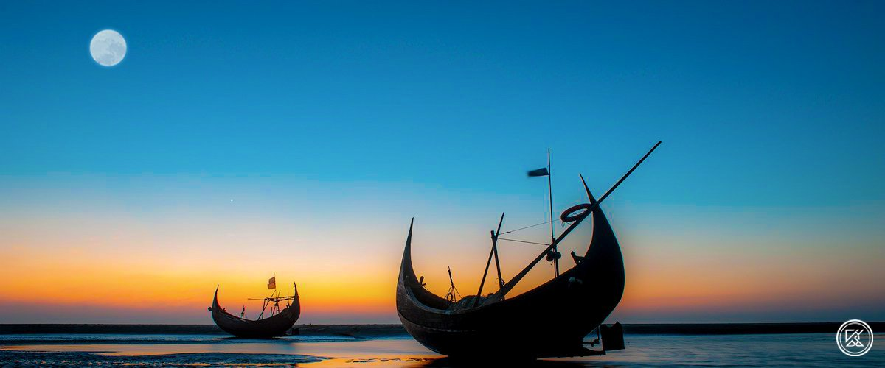
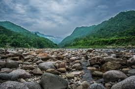
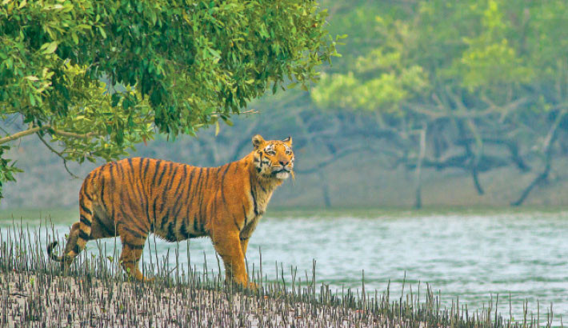

Cox's Bazar
Cox's Bazar is a city, fishing port, tourism center, and district headquarters in southeastern Bangladesh. It is famous mostly for its long natural sandy beach, and it is infamous for the largest refugee camp in the world. It is located 150 km (93 mi) south of the divisional headquarter city of Chittagong. Cox's Bazar is also known by the name Panowa, which translates literally as "yellow flower". Another old name was "Palongkee".
SYLHET
Sylhet is a metropolitan city in northeastern Bangladesh. It is the administrative seat of the Sylhet Division. Located on the north bank of the Surma River at the eastern tip of Bengal, Sylhet has a subtropical climate and lush highland terrain. The city has a population of more than half a million and is one of the largest cities in Bangladesh after Dhaka, Chittagong and Khulna. Sylhet is one of Bangladesh's most important spiritual and cultural centres. Furthermore, it is one of the most economically important cities after Dhaka and Chittagong. The city produces the highest amount of tea and natural gas. The hinterland of the Sylhet valley is the largest oil and gas-producing region in Bangladesh. It is also the largest hub of tea production in Bangladesh. It is notable for its high-quality cane and agarwood. The city is served by the Osmani International Airport, named after General Bangabir M A G Osmani, the Commander-in-Chief of the Mukti Bahini during the Bangladesh Liberation War. People from Sylhet form a significant portion of the Bangladeshi diaspora, particularly in the United Kingdom and the United States and other countries in the Middle East.
TANGUAR HAOR

Tanguar Haor a large haor lies within Sunamganj district extending over 10 mauzas of Dharmapasha and Tahirpur upazilas of the district. The mauzas covering the Tanguar haor are (1) Jagadishpur, (2) Bhabanipur, (3) Lamagaon, (4) Ramsinhapur, (5) Mahajampur, (6) Maindag, (7) Mayajuri, (8) Bhangachara Purba, (9) Noagaon, and (10) Tanguar Haor. The haor consists of 120 beels of various sizes. The area of Tanguar haor including 46 villages within the haor is about 100 sq km of which 2802.36 ha is wetland.
SUNDARBAN
The Sundarbans is the largest mangrove forest or saline woodland in the world. The total area of the Sundarbans is approximately 10,000 square kilometers, shared jointly between Bangladesh and India. The area of the Sundarbans in Bangladesh is 6,517 square kilometers. The Bangladeshi portion of the Sundarbans comprises parts of the Khulna, Satkhira, Bagerhat, Patuakhali, and Barguna districts. As a treasure trove of natural resources, the Sundarbans plays a significant role in Bangladesh's economy. Various types of timber, honey, wax, and fish are harvested from here. The Indian part of the Sundarbans lies in the South 24 Parganas and North 24 Parganas districts of West Bengal.